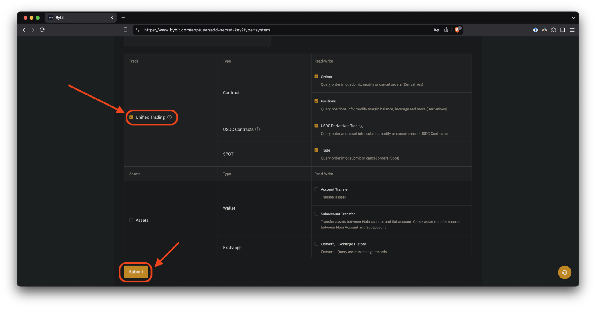

Generating API Keys
Генерация ключей API
Step 1
Шаг 1
Click on the profile image to show the account menu options.
Нажмите на изображение профиля, чтобы показать пункты меню учетной записи.
Ensure you are in the newly created sub-account!
Убедитесь, что вы находитесь в только что созданном субаккаунте!

Step 2
Шаг 2
Select the "API" link to show the API key creation page.
Выберите ссылку «API», чтобы открыть страницу создания ключа API.

Step 3
Шаг 3
Read the warning and click "Understood."
Прочитайте предупреждение и нажмите «Понятно».
Step 4
Шаг 4
Click on "Create New Key."
Нажмите «Создать новый ключ».

Step 5
Шаг 5
If you did not set up 2FA, Bybit will ask you to do so before continuing.
Если вы не настроили 2FA, Bybit попросит вас сделать это, прежде чем продолжить.
It will show as "Not Enabled Yet" in the warning.
В предупреждении будет указано «Еще не включено».
Click on "Set up" to go to the security page and configure it.
Нажмите на «Настроить», чтобы перейти на страницу безопасности и настроить ее.

Step 6
Шаг 6
Click on "Settings" to set up 2FA.
Нажмите на «Настройки», чтобы настроить 2FA.
This guide will not cover how to do that, as it is out of scope.
В данном руководстве мы не будем рассказывать о том, как это сделать, поскольку это не входит в его задачи.
Step 7
Шаг 7
If you see a green check-mark, you are good to go.
Если вы видите зеленую галочку, значит, все готово.

Step 8
Шаг 8
Now, go back to the API creation page from step 4, and press "Create New Key."
Теперь вернитесь на страницу создания API из шага 4 и нажмите «Создать новый ключ».

Step 9
Шаг 9
Choose the first option, "System-generated API keys."
Выберите первый вариант, «Генерируемые системой ключи API».
Step 10
Шаг 10
-
First, choose "API Transaction;"
Сначала выберите «Транзакция API;».
-
Then add a name, such as "PassivBot" so you remember where the key is used;
Затем добавьте имя, например «PassivBot», чтобы не забыть, где используется ключ;
-
Next select the option "Read-Write" to allow the bot to open and close positions properly;
Далее выберите опцию «Чтение-запись», чтобы бот мог правильно открывать и закрывать позиции;
-
Then select "Only IPs with permissions granted are allowed to access the OpenAPI";
Затем выберите «Доступ к OpenAPI разрешен только IP-адресам с предоставленными правами»;
-
Finally, add the following IP addresses, with no spaces between them:
Наконец, добавьте следующие IP-адреса без пробелов между ними:
31.41.63.194,146.19.106.113

Step 11
Шаг 11
Check the "Unified Trading" box and then press "Submit."
Установите флажок «Унифицированная торговля», а затем нажмите «Отправить».
Step 12
Шаг 12
Now, copy both API Key and API Secret and save it in a safe place. You will need them soon.
Теперь скопируйте оба ключа API Key и API Secret и сохраните их в надежном месте. Они вам скоро понадобятся.

Step 13
Шаг 13
If you see something like this, you created you API key successfully!
Если вы видите что-то подобное, значит, вы успешно создали свой API-ключ!